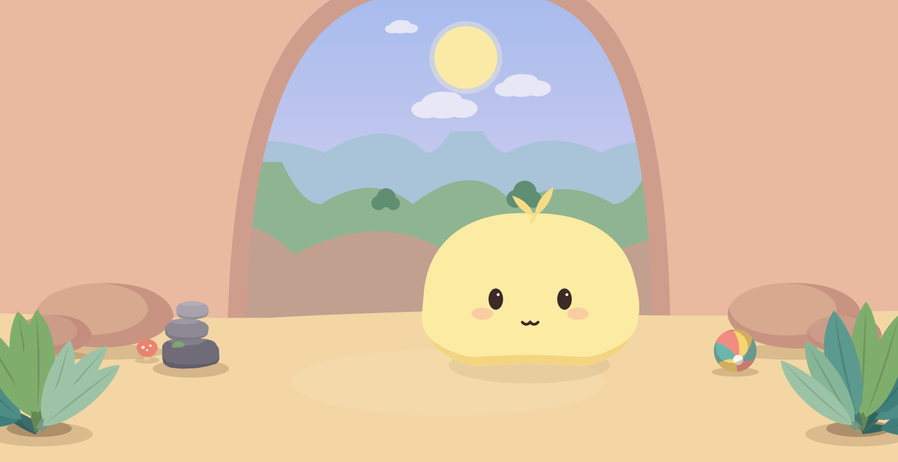

Try a few words
Type a short message and watch Butter move, change expression, and find its answer.
A little creature who listens
Sometimes a bounce or a blush; sometimes Butter has other plans. Type a few words and watch it answer in its own quiet way. Every Butter grows its own personality from how you play.
A calm little game by Dada Walrus Games

No big fuss
Butter doesn’t talk back in words. It responds in its own quiet way.
Type a short message and watch Butter move, change expression, and find its answer.
Each little interaction helps Butter develop a personality of its own.
No chat, no internet. Your Butter and its little world stay on your device.